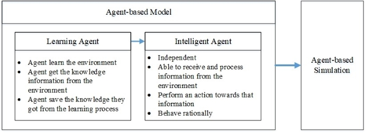

Optimization of Water Supply Vehicle Routing Problem with Time Windows in Flood Disaster using Parallel Simulated Annealing Algorithm
This is a final project for Computational Intelligence Course, Pusan National University, Winter 2017.
Introduction
In emergency planning, routing decision to distribute the relief supply is an important decision. Especially clean water supply during and after a flood disaster. That problem is formulated as a vehicle routing problem with time windows. In this paper, the vehicle routing problem with time windows is developed using parallel simulated annealing algorithm. The solution refined from this research can help the decision maker to choose which route is better to reach the destination faster and optimized the vehicle amount.
Figure 1. The meltdown of Fukushima Daiichi reactors (Atlas Environmental Justice, 2016)
The emergency planner also needs to understand the cognitive process and behavior pattern of evacuees because not every evacuee will make the same decisions and behave the same way. Predetermined behavior or random decision is not appropriate to model the evacuee’s decision in the disaster situation. Moreover, modeling evacuee’s behavior can be a tedious task because the agents have to mimic the complexity of human reactions to specific situations.
Agent-based Model
In this thesis, we tried to model the evacuee as an agent to support the emergency evacuation simulation. We proposed an agent-based model as a method for understanding human behaviors by representing an individual as an agent who assesses the current situation and makes a decision. Because humans are intelligent and make decisions based on their experience, perception, and knowledge, it is appropriate to employ the machine learning methodology to make the agent become intelligent. Thus, we model the agent as a learning agent that have their stored knowledge to make a decision in the agent-based simulation.

Figure 2. Learning agent for agent-based simulation
The agent decision making is modeled as a Markov Decision Process (MDP) problem with states, actions, and rewards. We trained the agent using Reinforcement Learning (RL) to get the behaviors of an evacuee in the nuclear disaster evacuation. The goal of the agent is how to reach a shelter point while avoiding the radiation that released from the nuclear disaster.
Figure 3. The interaction between the learning agent and the environment
Conclusions
Through extensive simulations, we demonstrate the applicability of the proposed model by considering various agent behaviors. We modeled and trained two types of agents in nuclear disaster evacuation, including resident agent and visitor agent. We validated the proposed approach through the use of the agent’s knowledge that shows the different behaviors of the agent. The simulation results show that the knowledge acquired from the training can be used as the agent’s experience for making a decision in the agent-based simulation of nuclear disaster evacuation.

Figure 4. Agent’s knowledge improved over the time